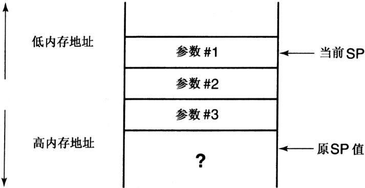
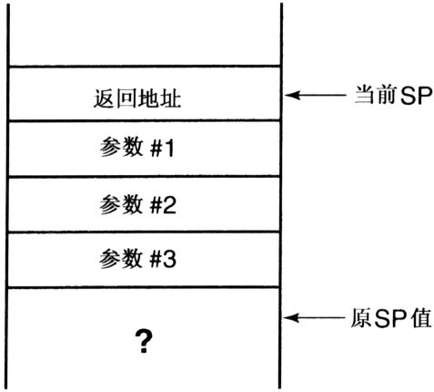
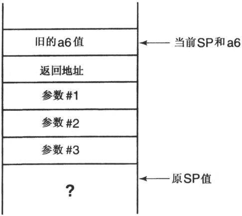
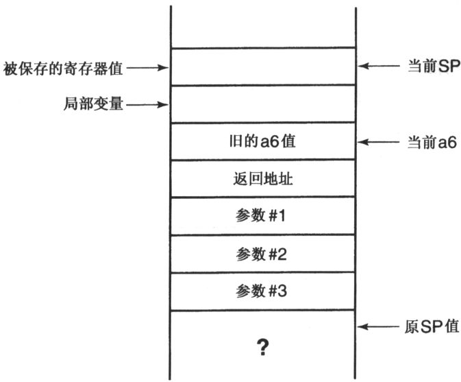
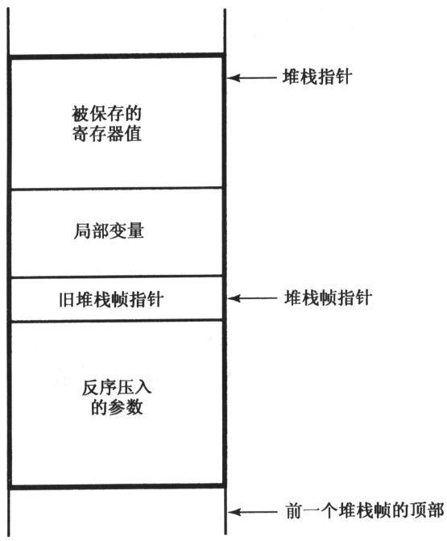
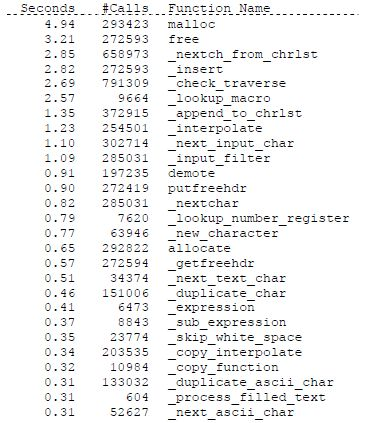

Capítulo 18 Entorno de tiempo de ejecución
In this chapter, we will examine the assembly language code produced by one specific compiler for one specific computer in order to learn several interesting things about the runtime environment for this implementation. Among the questions that will be answered are, "What are the limits of my runtime environment?" and "How do I get C and assembly language programs to work together?"
18.1 Determining the Runtime Environment
Your compiler or environment is sure to be different than the one we look at here, so you will need to perform experiments like these yourself in order to find out how things work on your machine.
The first step is obtaining an assembly language listing from your compiler. On UNIX systems, the -s compiler option causes the compiler to write the assembly language for each source file in a file whose name has the .s suffix. The Borland compilers also support this option, though they use the .asm suffix. Consult the documentation for specific details of other systems.
You will also need to read the assembly language code for your machine. It is not necessary to be a skillful assembly language programmer, but you will need a basic understanding of what each instruction is doing and how to interpret addressing modes. A manual describing your computer's instruction set is an excellent reference for this task.
Assembly language is not taught in this chapter because that is not the point of this book. Your assembly language is likely to differ from this one anyway. Nevertheless, if you compile the test program, the explanations of my machine's assembly language may help you decipher yours, because both assembly programs implement the same source code.
18.1.1 Test Program
So let's look at Program 18.1, the test program. It contains various pieces of code whose implementations are of interest. The program doesn't accomplish anything useful, but it doesn't have to—all that we want to do is to look at the assembly code the compiler produces for it. If there are other aspects of your runtime environment you wish to investigate, modify the program to include examples of them.
/*
** Program to determine the C runtime environment.
*/
/*
** Static initialization
*/
int static_variable = 5;
void
f()
{
register int i1, i2, i3, i4, i5,
i6, i7, i8, i9, i10;
register char*c1, *c2, *c3, *c4, *c5,
*c6, *c7, *c8, *c9, *c10;
extern inta_very_long_name_to_see_how_long_they_can_be;
double dbl;
intfunc_ret_int();
double func_ret_double();
char *func_ret_char_ptr();
/*
** Maximum number of register variables.
*/
i1 = 1; i2 = 2; i3 = 3; i4 = 4; i5 = 5;
i6 = 6; i7 = 7; i8 = 8; i9 = 9; i10 = 10;
c1 = (char *)110; c2 = (char *)120;
c3 = (char *)130; c4 = (char *)140;
c5 = (char *)150; c6 = (char *)160;
c7 = (char *)170; c8 = (char *)180;
c9 = (char *)190; c10 = (char *)200;
/*
** External names
*/
a_very_long_name_to_see_how_long_they_can_be = 1;
/*
** Function calling/returning protocol, stack frame
*/
i2 = func_ret_int( 10, i1, i10 );
dbl = func_ret_double();
c1 = func_ret_char_ptr( c1 );
}
int
func_ret_int( int a, int b, register int c )
{
intd;
d = b - 6;
return a + b + c;
}
double
func_ret_double()
{
return 3.14;
}
char *
func_ret_char_ptr( char *cp )
{
return cp + 1;
}Program 18.1 Test program
runtime.c
The assembly code in Program 18.2 was produced for a computer using a microprocessor from the Motorola 68000 family. I have edited this code to make it more clear and to remove irrelevant declarations.
This is a long program. Like most compiler output, it contains no comments to help the reader. But don't let it intimidate you! I'll explain most of it line by line in a series of examples that show a fragment of C code followed by the assembly code produced from it. The complete listing is given only as a reference so you can see how all of the little pieces in the examples fit together.
.data
.even
.globl _static_variable
_static_variable:
.long 5
.text
.globl _f
_f: linka6,#-88
moveml #0x3cfc,sp@
moveq #1,d7
moveq #2,d6
moveq #3,d5
moveq #4,d4
moveq #5,d3
moveq #6,d2
movl #7,a6@(-4)
movl #8,a6@(-8)
movl #9,a6@(-12)
movl #10,a6@(-16)
movl #110,a5
movl #120,a4
movl #130,a3
movl #140,a2
movl #150,a6@(-20)
movl #160,a6@(-24)
movl #170,a6@(-28)
movl #180,a6@(-32)
movl #190,a6@(-36)
movl #200,a6@(-40)
movl #1,_a_very_long_name_to_see_how_long_they_can_be
movl a6@(-16),sp@-
movl d7,sp@-
pea 10
jbsr _func_ret_int
lea sp@(12),sp
movl d0,d6
jbsr _func_ret_double
movl d0,a6@(-48)
movl d1,a6@(-44)
pea a5@
jbsr _func_ret_char_ptr
addqw #4,sp
movl d0,a5
moveml a6@(-88),#0x3cfc
unlk a6
rts
.globl _func_ret_int
_func_ret_int:
link a6,#-8
moveml #0x80,sp@
movl a6@(16),d7
movl a6@(12),d0
subql #6,d0
movl d0,a6@(-4)
movl a6@(8),d0
addl a6@(12),d0
addl d7,d0
moveml a6@(-8),#0x80
unlk a6
rts
.globl _func_ret_double
_func_ret_double:
link a6,#0
moveml #0,sp@
movl L2000000,d0
movl L2000000+4,d1
unlk a6
rts
L2000000:.long 0x40091eb8,0x51eb851f
.globl _func_ret_char_ptr
_func_ret_char_ptr:
link a6,#0
moveml #0,sp@
movl a6@(8),d0
addql #1,d0
unlk a6
rtsProgram 18.2 Assembly language code for test program
runtime.s
18.1.2 Static Variables and Initialization
The first thing the test program did was to declare and initialize a variable in static memory.
/*
** Static initialization
*/
int static_variable = 5;
.data
.enen
.global _static_variable
_static_variable:
.long 5The assembly code begins with directives to enter the data section of the program and make sure that the variable begins at an even address. The boundary alignment is a requirement of the 68000. Then the variable name is declared global. Notice that the name begins with an underscore. Many (but not all) C implementations add an underscore to the beginning of external names declared in the C code to prevent these names from conflicting with names used in various library routines. Finally, space is created for the variable, and it is initialized with the proper value.
18.1.3 The Stack Frame
The function f begins next. There are three parts to a function: the prologue, the body, and the epilogue. The prologue of a function does the work needed to start up a function, such as reserving memory on the stack for local variables. The epilogue takes care of cleaning up the stack just before the function returns. The body of the function, of course, is where the useful work is performed.
.globl _f
_f: link a6, #-88
moveml #0x3cfc,sp@These instructions begin with a directive to enter the code (text) segment of the program, followed by a global declaration for the function name. Note once again the underscore added to the front of the name. The first executable instruction begins to construct the stack frame for this function. The stack frame is the area on the stack that the function will use for storage of variables and other values. The link instruction will be explained in detail later; all that is important now is that it reserves 88 bytes of space on the stack for storage of local variables and other values.
The last instruction in this sequence writes copies of the values in selected registers to the stack. The 68000 has eight registers for manipulating data, called d0 through d7, and eight more registers for manipulating addresses, called a0 through a7. The value 0x3cfc indicates that registers d2 through d7 and a2 through a5 are to be stored; these are the "other values" mentioned earlier. It will become clear shortly why these particular registers were saved.
The local variable declarations and function prototypes don't produce any assembly code. Had any local variables been initialized in its declaration, instructions would appear here to perform the assignment.
18.1.4 Register Variables
The body of the function comes next. The purpose of this part of the test program is to determine how many variables can be stored in registers. It declares a lot of register variables and initializes each of them with a different value. The assembly code answers the question by showing where each value was stored.
/*
** Maximum number of register variables.
*/
i1 = 1; i2 = 2; i3 = 3; i4 = 4; i5 = 5;
i6 = 6; i7 = 7; i8 = 8; i9 = 9; i10 = 10;
c1 = (char *)110; c2 = (char *)120;
c3 = (char *)130; c4 = (char *)140;
c5 = (char *)150; c6 = (char *)160;
c7 = (char *)170; c8 = (char *)180;
c9 = (char *)190; c10 = (char *)200;
moveq #1,d7
The integer variables are initialized first. Notice that the values 1 through 6 are put in dam registers, but 7 through 10 are put somewhere else. This code shows that up to 6 integer values may be kept in the data registers. What about data types other than integer? Some implementations will not put char variables in registers. On some machines doubles are too long to fit in a register, and other machines have special registers that are used for floating-point values. It is easy to modify the test program to discover these details.
The next several instructions initialize the pointer variables. The first 4 values go to registers, and the remaining ones are put somewhere else. Thus, this compiler allows up to 4 pointer variables to be in registers. What about other types of pointers? Again, further experimentation is needed. On many machines, though, the size of a pointer is the same no matter what it is pointing at, so you may find that any type of pointer can be stored in a register.
Where are the other variables put? The addressing mode used performs indirection and indexing. This combination works much like a subscript on an array. Register a6 is called the frame pointer and points to a "reference" location within the stack frame. All values in the stack frame are accessed by means of offsets from this reference location; a6@(-28) specifies an offset of -28. Notice that the offsets begin with -4 and grow by four each time. Integers and pointers on this machine occupy 4 bytes of memory each. With these offsets, you can make a map showing exactly where each variable appears on the stack relative to the frame pointer, a6.
Having seen that registers d2-d7 and a2-a5 are being used to hold register variables, it now becomes clear why those registers were saved in the function prologue. A function must save the values in any register that it intends to use for register variables so that the original values can be restored before returning to the calling function, thus preserving its register variables.
One last thing about register variables: Why were registers d0-d1, a0-a1, and a6-a7 not used for register variables? On this machine, a6 is used as the frame pointer and a7 is the stack pointer. (This assembly language gives it the alias sp.) A later example will show that d0 and d1 are used in returning values from functions, so they can't be used for register variables.
But there is no apparent use of a0 or a1 in this code. The obvious conclusion is that they have some purpose, but the test program did not contain any code of that type. Further experimentation is needed to answer this question.
18.1.5 Length of External Identifiers
The next test tries to determine the maximum allowable length of external identifiers. This test seems easy enough: declare and use a variable with a long name and see what happens.
/*
** External names
*/
a_very_long_name_to_see_how_long_they_can_be = 1
mov1 #1, a_very_long_name_to_see_how_long_they_can_beIt appears from this code that there isn't a limit on the length of names. More precisely, this name is within whatever limit there is. To find the limit, keep making the name longer and longer until it is truncated in the assembly program.
CAUTION!
In fact, this test is not adequate. The final limit on external names is imposed by the linker, which may happily read long names but ignore all but the first several characters. The Standard requires external names to be significant in at least their first six characters (though differences in the case of letters might be lost). To test what the linker does, simply link the program and examine the resulting load map or name list.
18.1.6 Determining the Stack Frame Layout
The runtime stack holds data needed for each function to run, including its automatic variables and return addresses. The next few tests will determine two related things: the organization of the stack frame and the protocol for calling and returning from functions. The results show how to interface C and assembly language programs.
Passing Function Arguments
This example begins the call to a function.
/*
** Function calling/returning protocol, stack frame
*/
i2=func_ret_int(10,i1,i10);
movl a6@(-16), sp@-
movl d7, sp@-
pea 10
jbsr _func_ret_intThe first three instructions push the arguments to the function on the stack. The first argument that is pushed is the one stored at a6@(-16): the offsets examined earlier show that this value is the variable i10. d7 is pushed next; it contains the variable i1. The last argument is pushed differently than the others. The pea instruction simply pushes its operand on the stack, which is an efficient way to push a literal constant. Why are the arguments being pushed on the stack in the opposite order from how they appeared in the argument list? The answer will become clear shortly.
These instructions begin to create the stack frame belonging to the function that is about to be called. By tracing the instructions and keeping track of their effects, we can construct a complete picture of the stack frame. This picture provides information that is helpful if you need to trace the execution of a C program at the assembly language level. Figure 18.1 shows what has been built so far. The diagram shows lower memory addresses at the top and higher memory addresses at the bottom. The stack grows toward lower memory addresses (upward) as values are pushed on it. The stack contents below the original stack pointer are unknown, so it is shown as a question mark.

Figure 18.1 Stack frame after pushing the arguments
The next instruction is a "jump subroutine:" it pushes the return address on the stack and branches to the beginning of _func_ret_int. The return address is used by the called function when it is finished to go back to where it was called. The stack now looks like Figure 18.2.

Figure 18.2 Stack frame after the jump subroutine instruction
Function Prologue
Execution continues with the prologue of the called function:
The prologue is similar to the one examined earlier; the instructions must be examined in more detail to complete the map of the stack frame. The link instruction has several steps. First, the contents of a6 are pushed on the stack. Second, the current value in the stack pointer is copied into a6. Figure 18.3 illustrates this result.

Figure 18.3 Stack frame during the link instruction

Figure 18.4 Stack frame after the link instruction
Finally, the link instruction subtracts 8 from the stack pointer. As before, this creates the space that will hold the local variables and saved register values. The next instruction saves a single register into the stack frame; the operand 0x80 designates register d7. The register is stored at the top of the stack, which indicates that the top portion of the stack frame is where register values are saved; the remaining part of the stack frame must be where local variables are stored. Figure 18.4 shows what we know so far about the stack frame.
The last task the prologue performs is to copy a value from the stack into d7. The function declares the third argument to be a register variable, and the third argument is 16 bytes down from the frame pointer. On this machine, register arguments are passed on the stack normally and copied into a register in the function prologue. This additional instruction is overhead—if there aren't enough instructions in the function that use the argument, there won't be enough savings in speed or space to offset the overhead of copying the argument into a register.
Argument Ordering on the Stack
We can now deduce why the arguments are pushed on the stack in reverse order. The called function accesses the arguments using offsets from the frame pointer. When the arguments are pushed in reverse order, the first argument is on top of the pile and its offset from the frame pointer is a constant. In fact, the offset from the frame pointer to any argument will be a constant value that is independent of how many arguments were pushed.
What would happen if the arguments were pushed in the opposite order? Then the offset to the first argument would depend on how many were pushed. The compiler could compute this value except for one problem—the actual number of arguments passed might be different from the number of parameters that the function expects. In this situation, the offsets would be incorrect, and when the function tried to access an argument it would not get the one it wanted.
How are extra arguments handled in the reverse-order scheme? The diagram of the stack frame shows that any extra arguments that were passed would appear below the first ones; the distance from the frame pointer to the first argument would be unchanged. Therefore, the function would access the first three arguments properly and simply ignore the extras.
TIP
If the function somehow knew that there were extra arguments, on this machine it could access their values by taking the address of the last argument and incrementing this pointer. But it is better to use the stdarg.h macros, which provide a portable interface for accessing variable arguments.
Final Stack Frame Layout
The map of the stack frame for this compiler is now complete, and is shown in Figure 18.5.
Let's continue looking at the function:
d = b – 6;
return a + b + c;
}
movl a6@(12), d0
subql #6, d0
movl d0, a6@(-4)
movl a6@(8), d0
addl a6@(12), d0
addl d7, d0
moveml a6@(-8), #0x80
unlk a6
rtsThe stack frame map makes it easy to determine that the first movl instruction copies the second argument into d0. The next instruction subtracts 6 from this value, and the third stores the result in the local variable d. d0 is used as a "scratchpad" or temporary location for computations; this is one of the reasons it cannot be used to hold register variables.

Figure 18.5 Stack frame layout
The next three instructions evaluate the expression in the return statement. This value is the one we want to return to the calling function. But the result is just left in d0; remember this detail for later.
Function Epilogue
This function's epilogue begins with the moveml instruction, which restores the previously saved register value(s). Then the unlk (unlink) instruction copies the value in a6 into the stack pointer and loads a6 with its former value, which is popped off of the stack in the process. The effect of this action is to delete the portion of the stack frame above the return address. Finally, the rts instruction returns from the function by popping the return address off the stack into the program counter.
Execution now resumes in the calling program. Notice that the stack is not entirely cleaned up yet.
The first instruction executed after we've returned to the calling program adds 12 to the stack pointer. The addition effectively pops the argument values off of the stack, which is now in exactly the same state that it was in before the function call began.
It is interesting that the called function does not remove its entire stack frame from the stack: the arguments are left for the calling program to remove. The reason, once again, has to do with variable argument lists. The calling function pushes the arguments on the stack, so it is the only one who knows for sure how many arguments there are. Hence, only the calling function can safely remove them.
Return Values
The epilogue did not touch d0, so it still contains the value returned by the function. The second instruction executed after returning from the function copies d0 into d6, which is the variable (i2) to which the result is assigned.
With this compiler, then, a function returns a value by leaving it in d0, the calling function gets the value from d0 after the function has returned. This protocol is the other reason that d0 is not used to hold register variables.
The next function called returns a double.
This function doesn't have any arguments, so nothing is pushed on the stack. After it returns, both d0 and d1 are stored. On this machine, doubles are 8 bytes long, too big to fit in one register. Therefore, both d0 and d1 are needed to return one of these values.
The last function call illustrates how pointer values are returned from functions: they are also passed back through d0. A different compiler might pass pointer values back through a0 or some other register. The remaining instructions in the program are the prologue for this function.
18.1.7 Expression Side Effects
In Chapter 4 I mentioned that if an expression such as
y + 3;appeared in a program, it would be evaluated but would not affect the program because its result was not saved. A footnote then explained that it actually could affect the execution of the program in a subtle way.
Consider Program 18.3, which is supposed lo return the value of a + b. The function computes a result but doesn't return anything because the expression was erroneously omitted from the return statement. But with this compiler, the function actually works! d0 is used to compute x, and because this expression is the last one
/*
** A function that works on some machines despite a major error.
*/
int
erroneous( int a, int b )
{
intx;
/*
** Compute the answer, and return it
*/
x = a + b;
return;
}Program 18.3 A function that accidentally returns the proper value
no_ret.c
Now suppose we inserted the expression
a + 3;before the return statement. This new computation would change d0. Even though the result of the expression is not stored in any variable, it has affected the execution of the program by changing the value that is returned by this function.
A similar problem can be caused by debugging statements. If you add the statement
printf( "Function returns the value %d\n", x );before the return statement, the function no longer returns the correct value. Remove the debugging statement and it starts working again. It is extremely frustrating when your debugging statements change the behavior of the program!
These effects are all made possible by the original error—the omission of the expression from the return statement. This scenario may sound unlikely, but it occurred surprisingly often with old C compilers because they would not warn the programmer of a function that was supposed to return a value but did not.
18.2 La interfaz entre C y el lenguaje ensamblador
Este experimento ha demostrado lo que se necesita para escribir programas en lenguaje ensamblador que puedan llamar programas C o ser llamados por programas C. Los resultados relacionados con este entorno se resumen a continuación: ¡ su entorno debe ser diferente de él de alguna manera !
Primero, los nombres en el ensamblador deben seguir las reglas de los identificadores externos. En este sistema, debe comenzar con un guión bajo.
En segundo lugar, el ensamblador debe seguir el protocolo correcto de llamada / devolución de función. Hay dos situaciones: llamar a un programa en C desde un programa en lenguaje ensamblador y llamar a un programa en ensamblador desde un programa en C. Para llamar a un programa en C desde un programa en lenguaje ensamblador:
1. Si los registros d0, d1, a0 o a1 guardan valores importantes, deben guardarse antes de llamar al programa C, porque la función C no guarda sus valores.
2. Los parámetros de cualquier función deben insertarse en la pila en el orden inverso de la lista de parámetros.
3. La función debe ser llamada por una instrucción de tipo "salto de subrutina", que empuja la dirección de retorno a la pila.
4. Cuando la función C regresa, el ensamblador debe borrar cualquier parámetro de la pila.
5. Si el ensamblador espera aceptar un valor de retorno, se almacenará en d0 (si el valor de retorno es de tipo double, su otra mitad estará en d1).
6. Cualquier registro que se haya guardado antes de la llamada se puede restaurar en este momento.
Para escribir un ensamblador llamado por un programa en C:
1. Guarde los registros que desee modificar (excepto d0, d1, a0 y a1).
2. El valor del parámetro se obtiene de la pila porque la función C que lo llama empuja el parámetro en la pila.
3. Si la función debe devolver un valor, su valor debe almacenarse en d0 (en este caso, d0 no se puede guardar ni restaurar).
4. Antes de regresar, la función debe borrar cualquier contenido que haya colocado en la pila.
No es necesario crear un marco de pila completamente estilo C en su ensamblador. Todo lo que tiene que hacer es llamar a una función que pueda insertar los parámetros de la manera correcta y realizar la tarea de limpieza correctamente cuando regrese. En un ensamblador llamado por un programa en C, debe acceder a los parámetros donde se coloca la función C.
Antes de escribir funciones ensambladoras, necesita conocer el lenguaje ensamblador en su máquina. Algunos conocimientos básicos que nos permiten comprender cómo funciona un ensamblador existente están lejos de ser suficientes para escribir nuevos programas.
Los programas 18.4 y 18.5 son dos ejemplos de llamadas a funciones ensambladoras desde funciones C y llamadas funciones C desde funciones ensambladoras. Aunque son específicos de este entorno, siguen siendo muy útiles para ilustrar la situación al respecto. El primer ejemplo es un programa en lenguaje ensamblador que devuelve la suma de 3 parámetros enteros. Esta función no se molesta en completar el marco de la pila, simplemente calcula la suma de los parámetros y devuelve. Llamaremos a esta función desde una función C de la siguiente manera:
sum = sum_three_values( 25, 14, -6 );El segundo ejemplo muestra una sección del programa en lenguaje ensamblador, necesita imprimir 3 valores, llama a la función printf para completar este trabajo.
|
| 对三个整数求和，并返回这个值。
|
.text
.globl _sum_three_values
_sum_three_values:
movl sp@(4),d0 |Get 1st arg,
addl sp@(8),d0 |add 2nd arg,
addl sp@(12),d0 |add last arg.
rts |Return.Procedimiento 18.4 Programa en lenguaje ensamblador para sumar 3 enteros
suma.s
|
| 需要打印三个值，x,y和z。
|
movl z,sp@- | Push args on the
movl y,sp@- | stack in reverse
movl x,sp@- | order: format, x,
movl #format,sp@- | y, and z.
jbsr _printf | Now call printf
addl #16,sp | Clean up stack
\&...
.data
format:.ascii "x = %d, y = %d, and z = %d"
.byte 012, 0 | Newline and null
.even
x: .long 25
y: .long 45
z: .long 50Procedimiento 18.5 Programa en lenguaje ensamblador que llama a la función printf
printf.s
18.3 Eficiencia en tiempo de ejecución
¿Cuándo es un programa "demasiado grande" en una computadora vieja? Cuando la capacidad del programa después del crecimiento excede la cantidad de memoria, no se puede ejecutar, por lo que es "demasiado grande". Incluso en algunas máquinas modernas, un programa que debe almacenarse en ROM debe ser bastante pequeño antes de que pueda cargarse en un espacio de memoria limitado [1] .
Sin embargo, muchos sistemas informáticos modernos son menos restrictivos a este respecto, porque proporcionan memoria virtual (memoria virtual). La memoria virtual es implementada por el sistema operativo, coloca la parte activa del programa en la memoria y copia la parte inactiva al disco cuando es necesario, lo que permite que el sistema ejecute programas grandes. Pero cuanto más grande sea el programa, más copias deberán realizarse. Por lo tanto, los programas grandes no son imposibles de ejecutar como antes, pero a medida que aumenta el programa, su eficiencia de ejecución disminuye gradualmente. Entonces, ¿cuándo el programa parece "demasiado grande"? Ahí es cuando funciona demasiado lento.
La velocidad de ejecución del programa está obviamente relacionada con su tamaño. Cuanto más lenta sea la velocidad de ejecución del programa, más incómodo será utilizar este programa. Es difícil definir en qué punto un programa se etiquetará repentinamente como "demasiado lento". A menos que tenga que reaccionar a algunos eventos físicos que no puede controlar. Por ejemplo, si un programa que opera un reproductor de CD no puede procesar datos a una velocidad que pueda mantener la velocidad a la que se transfieren los datos desde el CD, obviamente es demasiado lento.
Mejorar la eficiencia
Los compiladores optimizados modernos hacen un muy buen trabajo al generar código objeto eficiente a partir de un programa en C. Por lo tanto, a menudo no es muy rentable dedicar su tiempo a realizar pequeños cambios en el código para hacerlo más eficiente.
insinuación:
Si un programa es demasiado grande o demasiado lento, es más eficiente elegir un algoritmo o estructura de datos más eficiente que profundizar en cada variable y ver si puede mejorar la eficiencia. Sin embargo, esto no quiere decir que pueda comportarse en el código, porque un código de estilo incorrecto siempre empeora las cosas.
Si un programa es demasiado grande, puede pensar fácilmente por dónde empezar para hacer el programa más pequeño: las funciones y estructuras de datos más grandes. Pero si un programa es demasiado lento, ¿por dónde empiezas a aumentar su velocidad? La respuesta es evaluar el desempeño del programa, en pocas palabras, es medir el tiempo que tarda cada parte del programa en ejecutarse. La parte del programa que lleva más tiempo es, obviamente, el objetivo de la optimización. Si la velocidad de ejecución de la parte del programa que se utiliza con más frecuencia puede ser más rápida, la velocidad de ejecución general del programa mejorará considerablemente.
La mayoría de los sistemas UNIX tienen herramientas de evaluación del rendimiento, y estas herramientas también están disponibles en muchos otros sistemas operativos. La figura 18.6 es parte del resultado de una de estas herramientas. Muestra la clasificación del tiempo empleado por cada función durante la ejecución de un programa en particular.

Figura 18.6 Información de muestra de evaluación del desempeño
Y el tiempo que tardó (en segundos). El tiempo total de ejecución de este programa es de 32,95 segundos. Podemos encontrar tres lugares interesantes de esta lista.
1. Entre las funciones que consumen más tiempo, algunas son funciones de biblioteca. En este ejemplo, malloc y free ocupan las dos primeras posiciones. No puede modificar la forma en que se implementan, pero al rediseñar el programa, si puede evitar o usar una asignación de memoria menos dinámica, la velocidad de ejecución del programa se puede aumentar en un 25% en la mayoría de los casos.
2. Algunas funciones consumen mucho tiempo porque se llaman muchas veces. Aunque es muy rápido cada vez que se llama individualmente, el tiempo total es bastante debido a la cantidad de llamadas. _nextch_from_chrlst es un ejemplo. El tiempo consumido por cada llamada de esta función es de solo 4,3 microsegundos. Debido a que es tan corto, es muy poco probable que pueda aumentar en gran medida su velocidad de ejecución mejorando la función. Sin embargo, debido a que se llama tantas veces, todavía es digno de atención. Junto con algunas declaraciones de registro sensatas para mejorar ligeramente la eficiencia de la función, el rendimiento general del programa aún puede mejorarse enormemente.
3. Algunas funciones no se llaman muchas veces, pero cada llamada lleva mucho tiempo. Por ejemplo, _loopup_macro tarda un promedio de 265 microsegundos por llamada. Encontrar un algoritmo más rápido para esta función puede aumentar la velocidad del programa hasta en un 7,75%. [2]
Como último recurso , puede recodificar una sola función en lenguaje ensamblador. Cuanto menor sea la función, más fácil será recodificar. El efecto de este método puede ser muy bueno, porque en funciones pequeñas, el costo fijo del orden de función de C y el epílogo de función ocupa una gran proporción del tiempo de ejecución. Es mucho más difícil recodificar funciones más grandes, por lo que no es muy eficiente pasar el tiempo en este lugar.
La evaluación del desempeño a menudo no puede decirle lo que no sabía antes, pero a veces sus resultados pueden ser bastante inesperados. La ventaja de la evaluación del desempeño es que puede averiguar qué parte del programa está investigando y puede traer la mayor mejora del desempeño.
18.4 Resumen
Algunas de las tareas que estudiamos en esta máquina también se implementan de esta manera en muchos otros entornos. Por ejemplo, la mayoría de los entornos crean algún tipo de marco de pila, que las funciones utilizan para almacenar sus datos. Los detalles de los marcos de la pila pueden variar, pero sus ideas básicas son las mismas.
Algunas otras tareas pueden ser bastante diferentes en diferentes entornos. Algunas computadoras tienen hardware especial para almacenar parámetros de funciones, por lo que sus métodos de procesamiento pueden ser bastante diferentes de los que hemos visto. Otras máquinas también pueden utilizar métodos diferentes al transferir valores de función.
advertir:
De hecho, diferentes compiladores pueden producir diferentes códigos en la misma máquina. Otro compilador usado en nuestra máquina de prueba puede usar de 9 a 14 variables de registro (el número exacto depende de algunas otras condiciones). Los diferentes compiladores pueden tener diferentes convenciones de marcos de pila o usar protocolos incompatibles en llamadas y devoluciones de funciones. Por lo tanto, en circunstancias normales, no puede utilizar diferentes compiladores para compilar diferentes fragmentos del mismo programa.
La mejor manera de mejorar la eficiencia de un programa es elegir un algoritmo mejor para él. La siguiente mejor manera de mejorar la velocidad de ejecución de un programa es realizar una evaluación de desempeño del programa para ver dónde pasa la mayor parte del tiempo. Centrar sus medidas de optimización en esta parte del programa producirá los mejores resultados.
insinuación:
Aprender el entorno de ejecución de la máquina es beneficioso y peligroso, diciendo que es útil porque el conocimiento que adquieres te permite hacer cosas que otros métodos no pueden hacer, y es peligroso porque si hay algo en el programa que depende de esto. conocimiento Algo que pueda dañar la portabilidad del programa. En esta era, la velocidad del desarrollo de las computadoras es muy rápida y muchas máquinas están desactualizadas antes de estar en los estantes. Por lo tanto, la posibilidad de convertir un programa de una máquina a otra es muy realista, por lo que esperamos que el código tenga una buena portabilidad.
18.5 Resumen de advertencias
1. Es el enlazador, no el compilador, el que determina la longitud máxima del identificador externo.
2. No puede vincular programas producidos por diferentes compiladores.
18.6 Resumen de consejos de programación
1. Utilice stdarg para implementar listas de parámetros de variables.
2. Mejorar el algoritmo es más eficiente que optimizar el código.
3. El uso de una técnica específica para un entorno hará que el programa no sea portátil.
18.7 Pregunta
1. ¿Cómo se ve el marco de la pila en su entorno?
2. En su sistema, ¿cuántos caracteres puede tener un identificador externo significativo?
3. En su entorno, ¿cuántas variables puede almacenar una caja registradora? ¿Hace alguna distinción entre punteros y valores no punteros?
4. ¿Cómo se pasan los parámetros a las funciones de su entorno? ¿Cómo se devuelve el valor de la función?
 5. En la máquina que estamos usando en este
capítulo, si una función declara uno o más de sus parámetros como variables de registro, entonces los parámetros
de
esta función se insertan en la pila en la secuencia de funciones como de costumbre, y luego se copian en el
registro
correcto. . Si estos parámetros se pueden guardar directamente en el registro, la eficiencia de la función será
mayor. ¿Se puede realizar esta técnica de paso de parámetros? Si es así, ¿cómo se puede lograr?
5. En la máquina que estamos usando en este
capítulo, si una función declara uno o más de sus parámetros como variables de registro, entonces los parámetros
de
esta función se insertan en la pila en la secuencia de funciones como de costumbre, y luego se copian en el
registro
correcto. . Si estos parámetros se pueden guardar directamente en el registro, la eficiencia de la función será
mayor. ¿Se puede realizar esta técnica de paso de parámetros? Si es así, ¿cómo se puede lograr?
6. En el entorno que estamos discutiendo, la
función de llamada es responsable de borrar los parámetros que ha introducido en la pila. Entonces, ¿la función
llamada puede realizar esta tarea? Si no es así, ¿en qué condiciones es posible?
7. Si los programas en lenguaje ensamblador son más eficientes que los programas en C, ¿por qué no escribir todos los programas en lenguaje ensamblador?
18.8 Ejercicios de programación
★ 1. Escriba una función en lenguaje ensamblador para su sistema que acepte 3 parámetros enteros y devuelva la suma de ellos.
★ 2. Escriba un programa en lenguaje ensamblador, cree 3 valores enteros y llame a la función printf para imprimirlos.
★★ 3. Suponga que el archivo stdarg.h se
eliminó accidentalmente de su sistema. Escriba un conjunto de macros estándar como se describe en el Capítulo 7.
[1] La memoria de solo lectura (ROM, memoria de solo lectura) es una memoria que no se puede modificar. Por lo general, se usa para almacenar programas que controlan algunos dispositivos en una computadora.
[2] De hecho, aún debemos prestar atención al cuarto punto. El número de llamadas a malloc es 20.833 más que el de gratis, por lo que se pierde algo de memoria.